| Pages | |
| Home Season 1 Season 2 Season 3 Season 4 Trivia | |
| Season 1 | |
| Episode Name | Desrciption |
| S1 E1 "Izuku Midoriya: Origin" 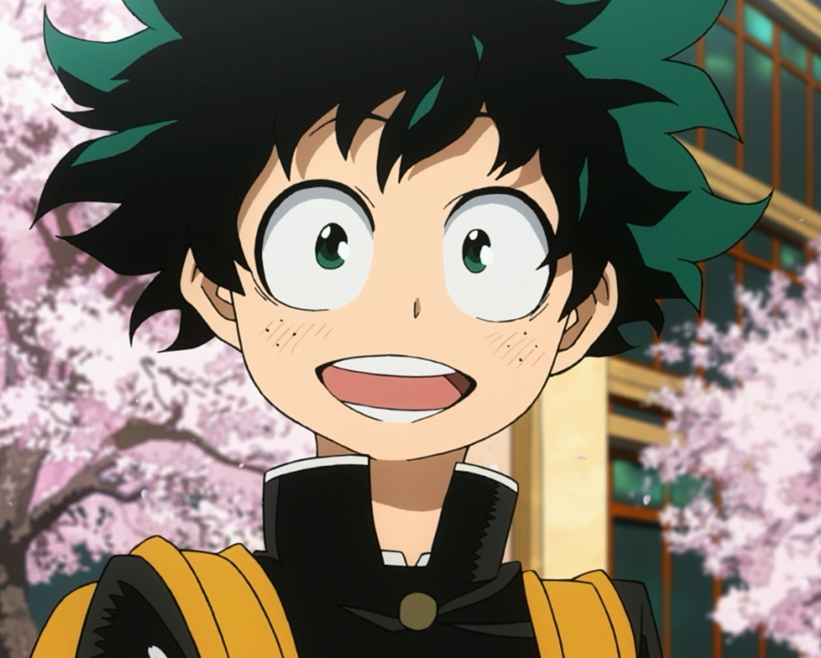 |
In a world where most of the population is gifted with special powers known as "Quirks", Izuku Midoriya is a young boy who always dreamed of becoming a hero, despite not having a Quirk himself, until one day he is attacked by a villain made of sludge and is rescued by none other than All Might, the most famous hero ever and his idol since childhood. |
| S1 E2 "What It Takes to Be a Hero" 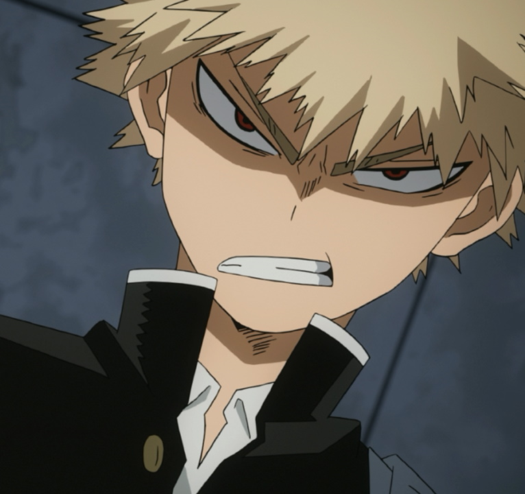 |
Izuku discovers that All Might's true form is that of a frail, emaciated man who suffered a massive injury years ago. All Might tells Izuku that he should give up on being a hero and focus on a more realistic dream. Disheartened, Izuku makes his way home, only to see his classmate and bully Katsuki Bakugō attacked by the same sludge villain that All Might captured. With no heroes around able to fight the villain, Izuku rushes in. |
| S1 E3 "Roaring Muscles" 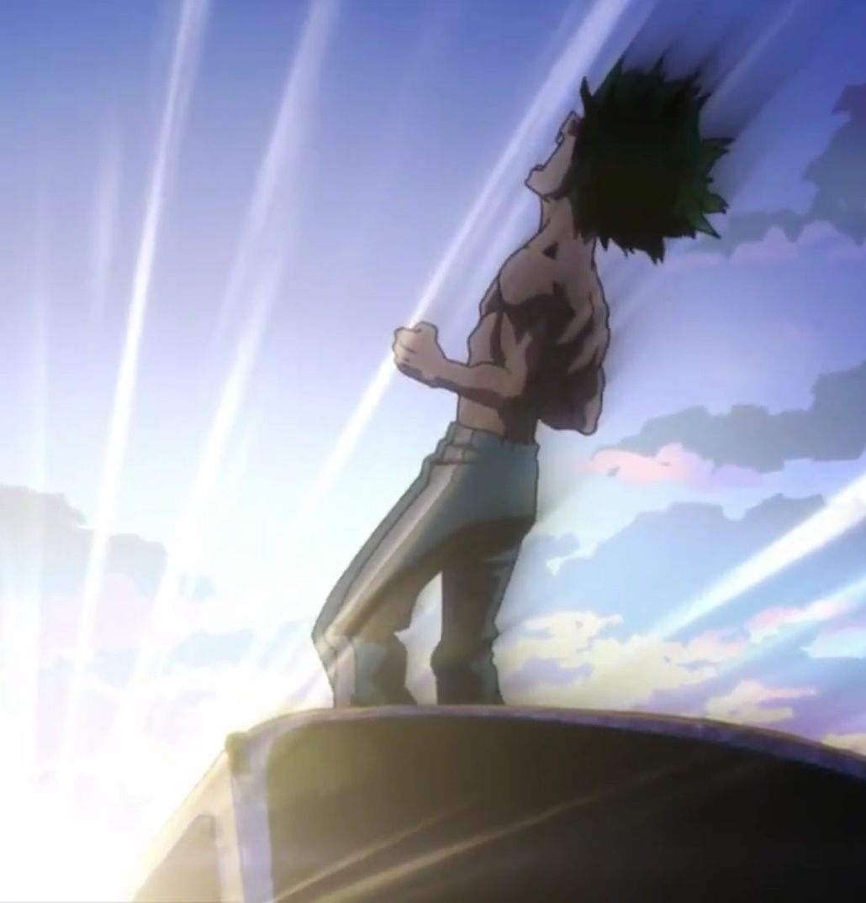 |
All Might tells Izuku of his Quirk, "One For All", a sacred torch that transfers its strength from person to person. While All Might believes Izuku to be worthy of his Quirk, bestowing it to him right away would ruin his untrained body. All Might then designs a ten-month training regimen to ensure that Izuku can become a vessel that can carry it. |
| S1 E4 "Start Line" 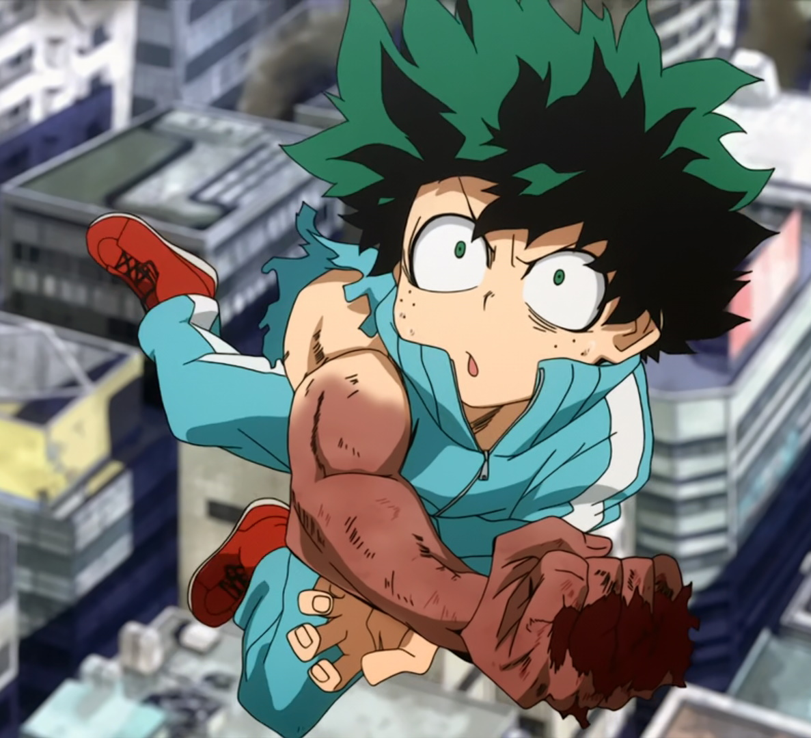 |
After receiving All Might's Quirk, the time has come for Izuku to attend the exams for the prestigious U.A. High School for heroes in training. During the practical exam, Izuku gets himself in a pinch and is about to fail until one of his fellow examinees finds herself in serious danger and he runs to her rescue. |
| S1 E5 "What I Can Do For Now" 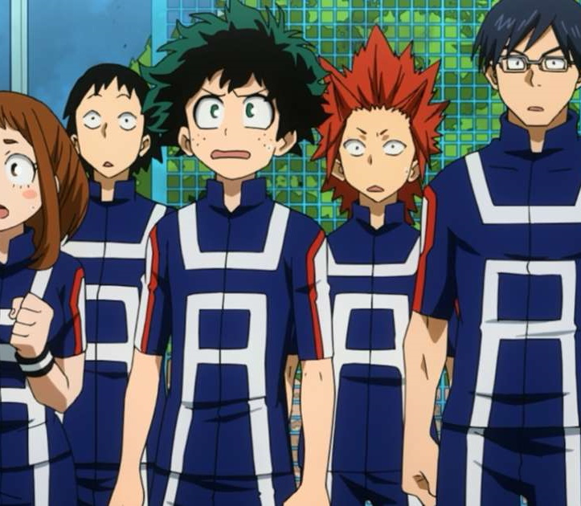 |
It's Izuku's first day as a student of U.A. High School. However, his homeroom teacher Shōta Aizawa decides to hold a physical test to evaluate how the students use their Quirks. Mr. Aizawa threatens the worst ranked student with expulsion, and Izuku finds himself in another predicament as he still has not learned to control his Quirk properly. |
| S1 E6 "Rage, You Damned Nerd"" 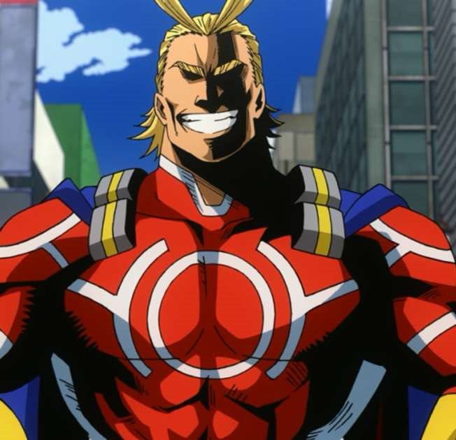 |
Now donning their own hero costumes, the students are assigned to a mock battle between teams of two to test their combat abilities. Izuku is paired with Ochako Uraraka, the girl he helped during the entrance exams who also becomes his friend much to his joy. However, also to his dismay, one of his opponents is Bakugō, who always mocked him for his Quirklessness, and is now furious at him. |
| S1 E7 "Deku vs. Kacchan" 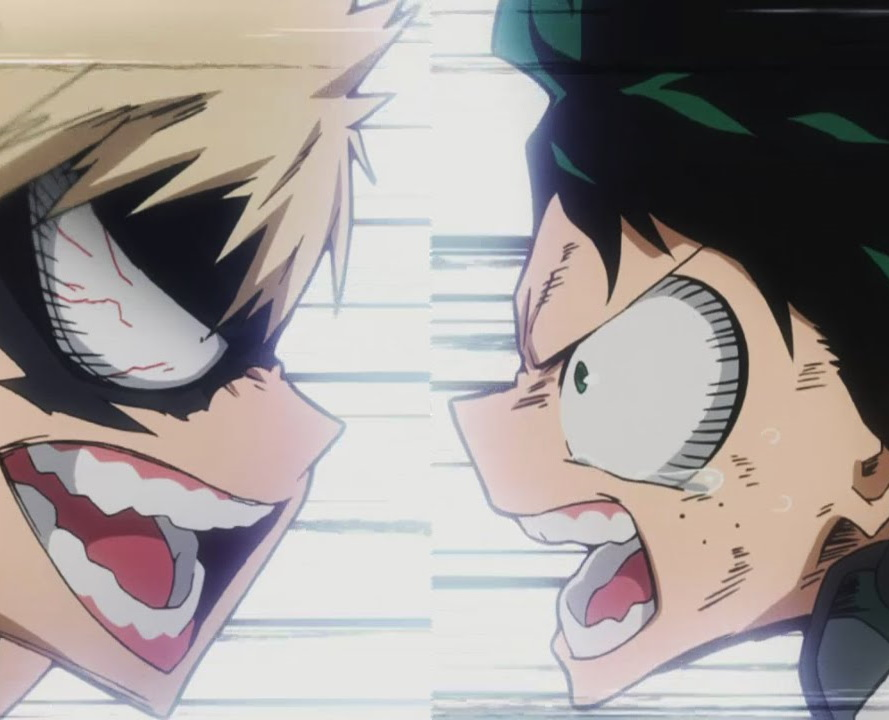 |
The mock battle continues with Izuku barely holding against Bakugō's devastating attacks, leaving Ochako to face the other opponent Tenya Iida by herself. As the time limit approaches, Izuku seems to have no option but to use his Quirk against Bakugō in an attempt to defeat him, until he comes up with a better idea. |
| S1 E8 "Bakugo's Start Line" 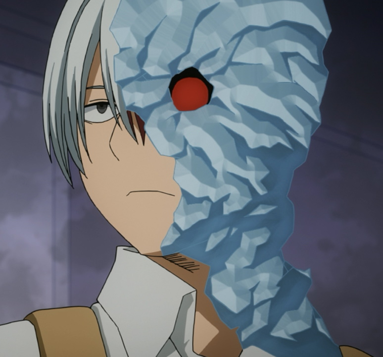 |
After losing against Izuku in the mock battle, Bakugō watches the rest of his classmates in action and realizes that he still has a long way to stand above his peers. After recovering from his injuries, Izuku attempts to cheer him up, to the point of sharing parts of his secret with the other boy. Meanwhile, news that All Might is teaching at U.A. are received by some individuals with contempt. |
| S1 E9 "Yeah, Just Do Your Best, Iida!" 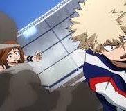 |
Much to his surprise, Izuku is chosen as the class president, but he ends up relinquishing the position to Iida when he and his friends find him more suitable for the position. The students are then assigned to another field exercise, but before it begins, a horde of villains suddenly appear before them. |
| S1 E10 "Encounter with the Unknown" 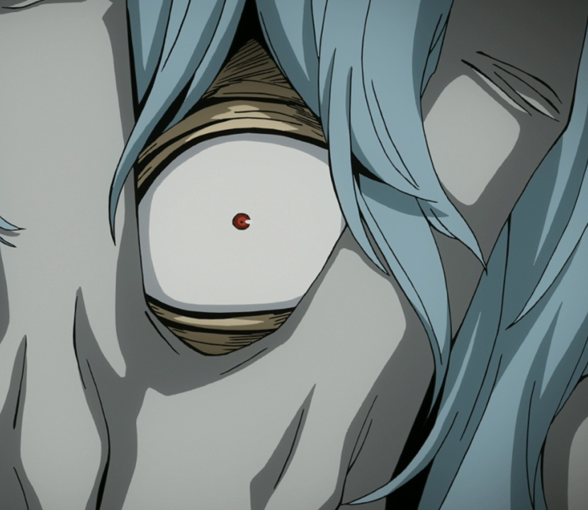 |
The villains use their powers to scatter and ambush the students in order to attract All Might for a trap. Izuku ends up stranded and surrounded on a boat along with his classmates Tsuyu Asui and Minoru Mineta, but after learning more about their powers, he comes up with a plan to turn the tides. Elsewhere, Iida is chosen by the others to break through the enemy trap and call for help. |
| S1 E11 "Game Over" 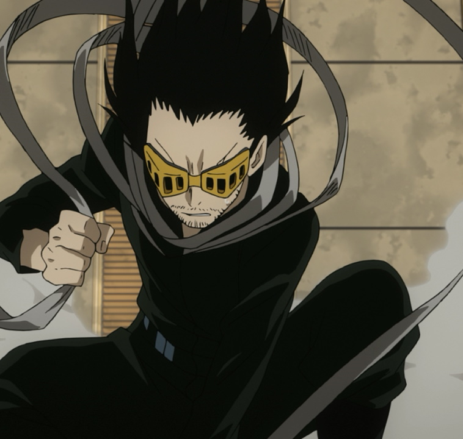 |
The students fight for their lives against the Villains while Iida manages to escape with his friends' help. Once it's clear that Iida will warn the other teachers who will come to stop them, the Villains' leader Tomura Shigaraki decides to kill Izuku and his friends just to hurt All Might's pride before they leave, when All Might himself appears. |
| S1 E12 "All Might" 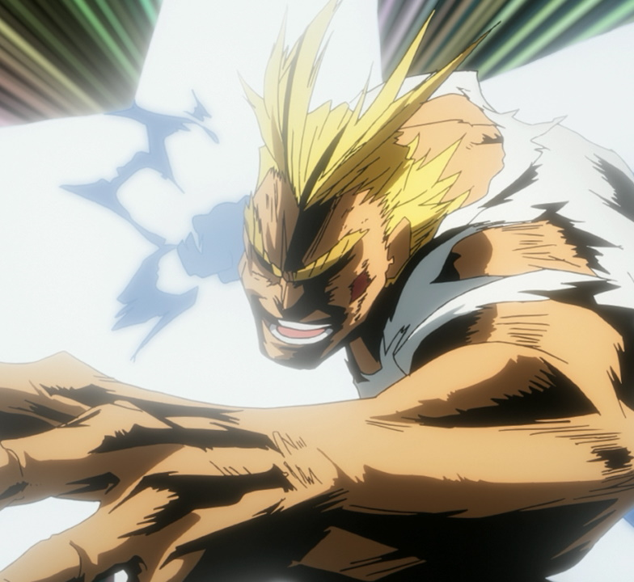 |
Shigaraki unleashes his secret weapon, the Multi-Quirk monster called "Nomu" against All Might, who finds himself in a pinch, until Izuku and some other students arrive to assist him, but All Might has little time left before he runs out of power to defeat the creature in order to protect the school. |
| S1 E13 "In Each of our Hearts" 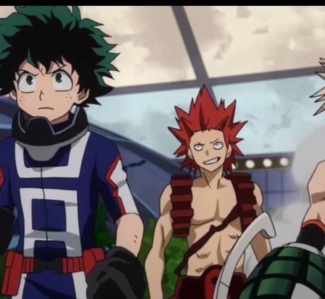 |
Although he was able to defeat the Nomu, All Might has no energy left and is defenseless against Shigaraki, but Izuku manages to stall the enemy long enough for the other teachers to arrive and force him to retreat. As the leftover Villains are captured and the students are rescued, All Might thanks Izuku for saving his life, but elsewhere, Shigaraki confers with his master, implying that their feud against the Heroes is just beginning. |